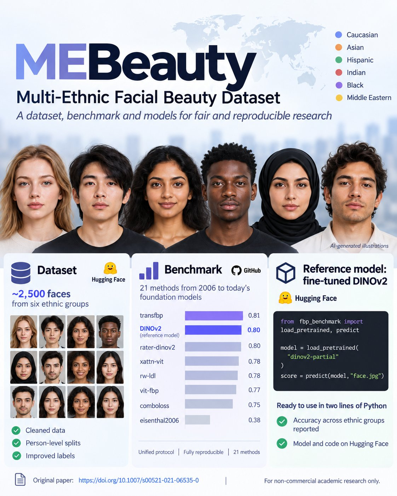

💡 Senior AI Research Engineer with 8+ years of experience across LLMs, multimodal and generative AI, computer vision, and production ML.
🎓 PhD in Computer Science with peer-reviewed Q1 publications and 130+ Google Scholar citations. Experienced in bridging research and engineering.
🚀 Background includes work at AI startups, research labs, and industry teams, as well as earlier software engineering experience with team leadership.
PhD, Computer Science — East China University of Science and Technology, 2017–2022
MSc, Computer Science — Shanghai Jiao Tong University, 2013–2017
BEng, Computer Science & Engineering — National Research Nuclear University MEPhI, 2005–2009
Full list on Google Scholar.
LLMs & Multimodal: multimodal learning, VLMs, reasoning models, test-time compute, pre-training, SFT
Post-training & RL: GRPO, RLVR, RLHF, DPO, ORPO, reward modeling
Generative AI: diffusion models (SDXL, FLUX, Wan), image and video generation, ControlNet, IP-Adapter, LoRA
Distributed training: DeepSpeed (ZeRO-3), Megatron, FSDP, mixed precision
Efficient AI: distillation, quantization, inference optimization, vLLM, SGLang, NVIDIA Triton
Data & evaluation: synthetic data generation, LLM evaluation, LLM-as-a-judge
Tools: Python, PyTorch, Hugging Face, Docker, Linux, Git, SQL
English (full professional) · Russian (native) · Chinese (working knowledge)

A multi-ethnic facial beauty dataset collected in the wild, with human attractiveness ratings, first published in 2022 and now fully open and reproducible.
For non-commercial academic research only.
Open to research and engineering roles in LLM post-training, multimodal AI, and efficient AI, and to research collaborations.
dr.irina.lebedeva@gmail.com